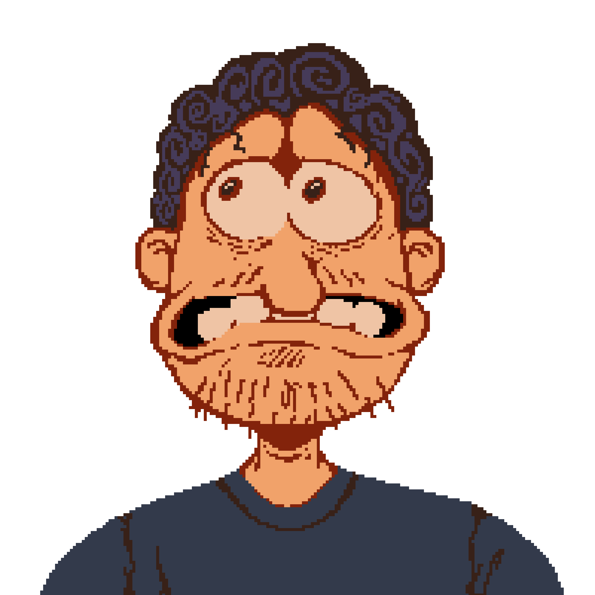
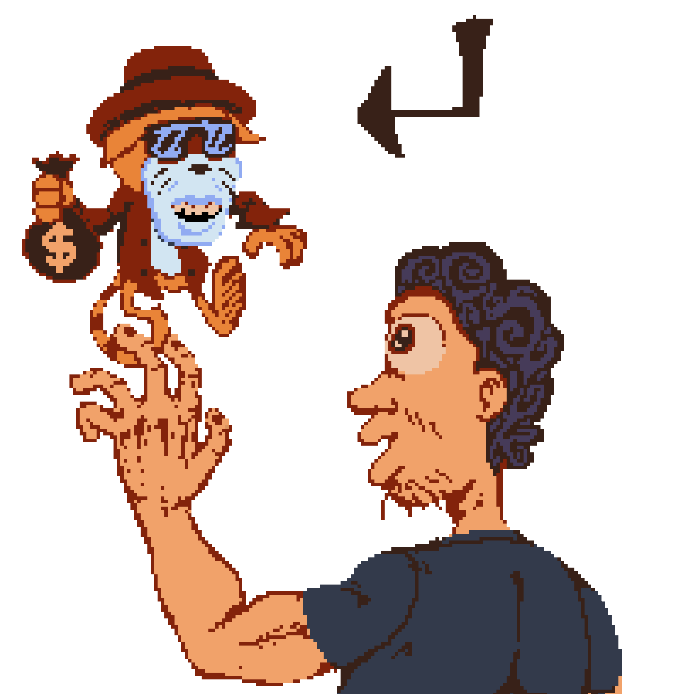

Imagine um jogo de pancadaria no melhor estilo dos clássicos beat 'em up, inspirado em jogos como Streets of Rage, mas com uma situação bem diferente: em vez de enfrentar uma grande organização criminosa, você está tentando pagar uma dívida com um agiota, que é um gato. Este é o Gato Agiota.
A ideia é a seguinte: utilizar o humor, a ação e a linguagem dos videogames para conversar principalmente com os jovens sobre educação financeira e os riscos de pegar dinheiro emprestado de pessoas que trabalham fora das normas legais de crédito. Em vez de apresentar uma aula tradicional sobre finanças, o jogo coloca o usuário na pele do protagonista, que passa por esta situação e permite que ele perceba, através do personagem, como uma decisão financeira impulsiva pode trazer consequências devastadoras.

A história conta sobre um jovem que sonha em ter um PC Gamer para jogar seus jogos favoritos. O problema é que ele não tinha dinheiro suficiente para comprar o computador. Em vez de esperar e juntar dinheiro aos poucos, João tomou uma decisão arriscada: pediu um empréstimo para o misterioso...

O que o nosso garoto não sabia era que os agiotas são MALDOSOS, e este não era nada diferente. E o que parecia ser uma solução rápida logo se transforma em uma grande dor de cabeça. João descobre que terá apenas 7 dias para conseguir o dinheiro e quitar a dívida. Agora, ele precisa percorrer a cidade realizando diversos trabalhos para juntar o valor necessário. Caso contrário...
Cada trabalho é transformado em uma fase no estilo beat 'em up. João pode, por exemplo, trabalhar numa lanchonete, salvar uma família de um incendio, fazer um ato de circo e diversos outros serviços temporários. Só que, no universo maluco do jogo, essas atividades acontecem de uma maneira totalmente adaptada para esta gênero: enquanto trabalha, João precisa atravessar diferentes cenários, enfrentar desafios, derrotar oponentes através do trabalho honesto e ganhar DINHEIRO. Você tem o que é preciso para se livrar deste fardo? Ou sucumbirá para a falência?
Apesar de ter uma proposta humorística e exagerada, o jogo possui uma mensagem importante. A história mostra como um empréstimo aparentemente fácil pode se transformar em um problema muito maior, especialmente quando envolve agiotagem e condições de pagamento abusivas. No final das contas, João não está apenas tentando sobreviver à pressão. Ele está aprendendo uma lição essencial: antes de assumir uma dívida, é fundamental entender as condições, avaliar se realmente é possível pagar e procurar alternativas seguras e legais.
Com muita ação, situações inusitadas e uma corrida contra o relógio, Gato Agiota transforma um tema sério em uma experiência descontraída e acessível, mostrando que algumas decisões podem parecer uma boa ideia no começo, mas podem custar muito mais do que imaginamos.